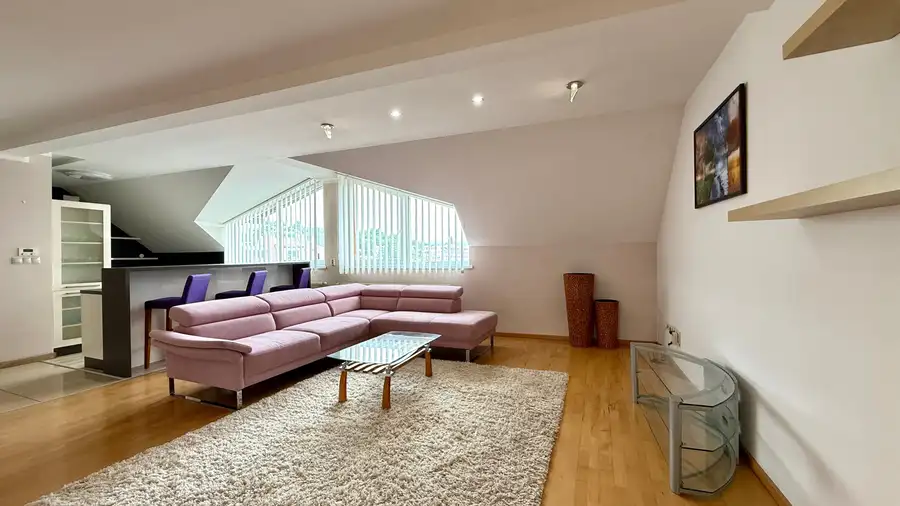
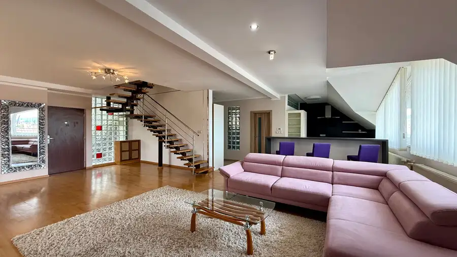
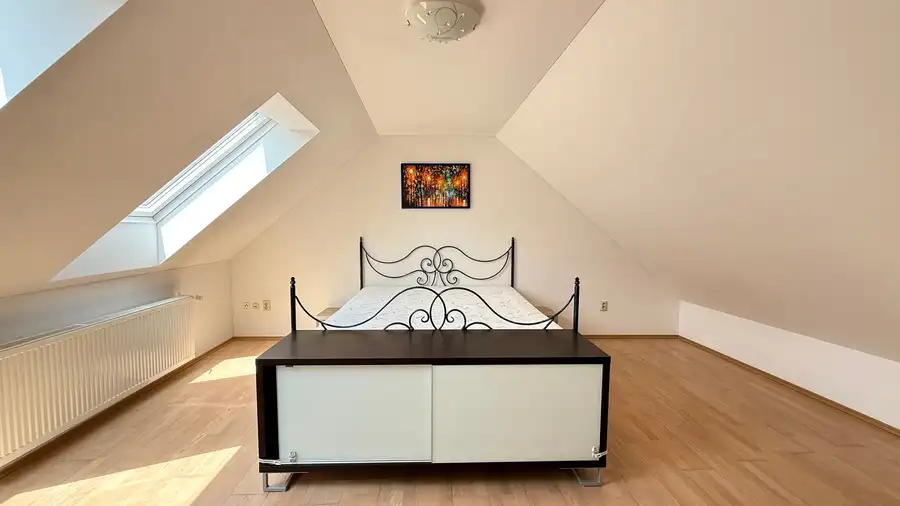
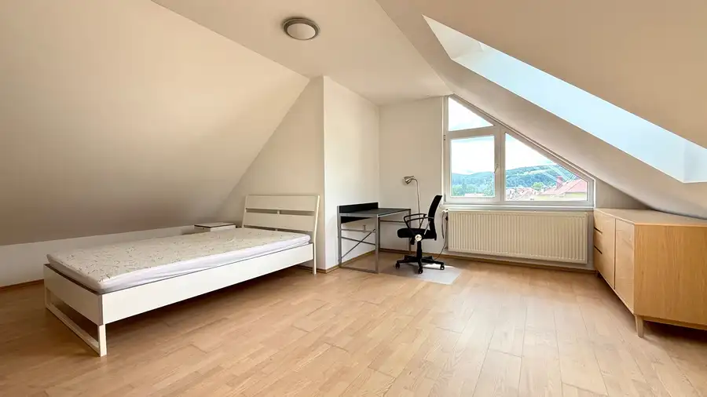

Prenájom · Byt
Mezonet 4izb. na prenájom v Banskej Bystrici 150m2
Banská Bystrica
Cena na vyžádání




- Plocha150 m²
- Poschodie2. z 3
- StavKompletná rekonštrukcia
- VlastníctvoOsobné
O nehnuteľnosti
Ponúkame Vám na prenájom Mezonet v Banskej Bystrici (Cetrum).Parametre bytu:150m2 / na 2. - 3. poschodí (3-celkovo) / orientácia okien: východ - juh - západ / zariadený v centre mesta plná občianska vybavenosť ideálne pre rodinu (viac osôb) - možnosť menšieho domáceho zvieratka parkovacie miesto k dispozícií možnosť využitia záhrady pre relaxNájomné je 900€ + energieObhliadku si môžete dohodnúť telefonicky na čísle 0948 172 701, alebo mailom na vojtechsabol@gmail.comODMENA ZA TIPPoznáte v okolí niekoho, kto má záujem predať alebo prenajať svoju nehnuteľnosť? V prípade odporúčania azrealizovania obchodu, Vám vyplatíme dohodnutú odmenu za tip.
Parametre
- Cena vrátane energií
- Nie
- Doprava
- MHD
- Druh
- Mezonet
- Dátum zverejnenia
- 17. 12. 2024
- Energetický certifikát budovy
- V príprave
- Podlažie
- 2
- Počet nadzemných podlaží
- 3
- Rok výstavby
- 2016
- Stav nehnuteľnosti
- Kompletná rekonštrukcia
- Telekomunikácie
- Káblová TV, Internet, Optická sieť
- Terás
- 1
- Typ
- Prenájom
- Typ konštrukcie
- Tehlová
- Umiestnenie
- Ďalšie nadzemné podlažie
- Vlastníctvo
- Osobné
- Vybavenie
- Terasa, Sklad, Technická miestnosť, Tepelná izolácia, Vonkajšie parkovacie miesto, Šatníkové skrine
- Vykurovanie
- Ústredné
- Zariadenie
- Zariadené kompletne
- Úžitková plocha
- 150 m²
Kde to je


Ďalšie ponuky
Celá ponuka